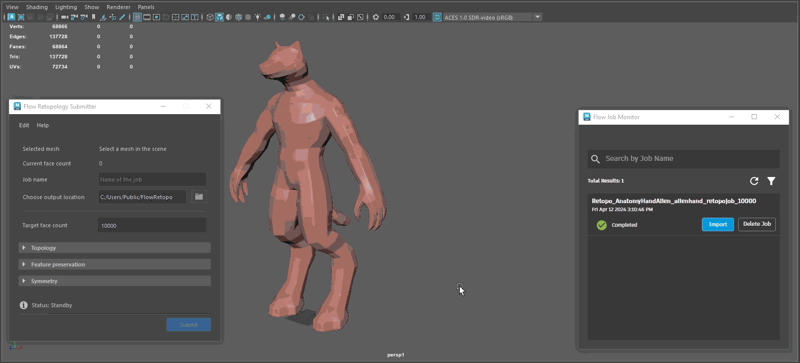

Flow Retopology FAQ
This topic addresses commonly-asked questions about working with Flow Retopology for Maya.

How will I be notified that my job is complete?
- You can check on the Flow Job Monitor window and periodically refresh the window to stay up to date on your job progress. Job progress status is indicated and once complete, the job will have the completed checkmark.
Where is my file stored?
- You can choose the location on disk of where your job is stored when complete in the Flow Retopology Submitter dialog, under Choose Output Location. Navigate to the directory of your choice where your completed job will be saved on disk. Your completed job will be saved with a suffix of
_RESULT so you can easily distinguish it once complete.
Can I take a previous job and redo it?
- No, you cannot re-run or copy the settings from a previous job. You have to Save Settings, write down the settings or manually input the same information as a previous job to run it once again. Remember that any computing or completed job counts toward your total monthly limit.
Where is the preprocessing option?
- Preprocessing occurs for each job submission that requires it automatically. There are certain errors that can be encountered that can cause fault, which the algorithm will try to perform an automatic cleanup process on most of these. In certain cases, there might be some manual cleanup required inside of Maya so that the Retopology process succeeds.